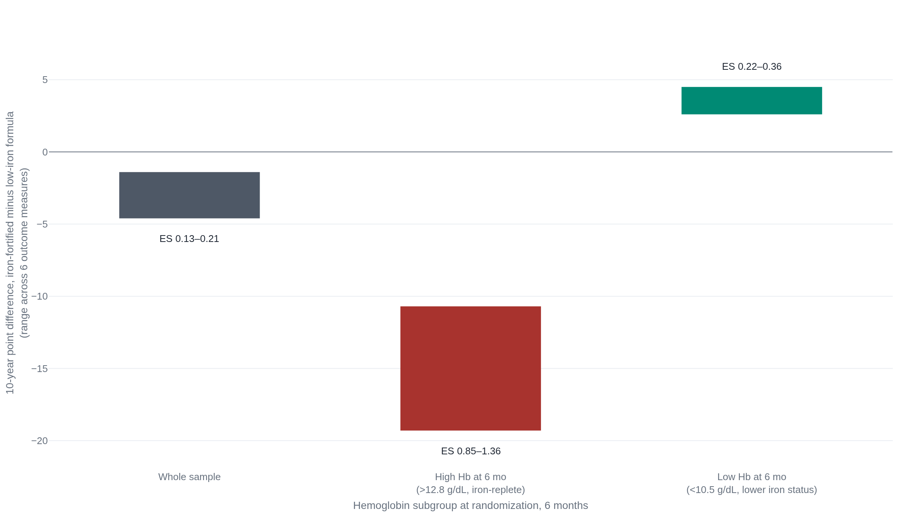

Iron-fortified formula helped Chile's low-iron infants and set back the ones who already had enough
Baseline iron status splits the cognitive and visual-motor scores, a pattern that held at sixteen years, while a separate ten-year analysis found the same infants had better adaptive behavior across the whole group, not broken out by baseline status.
Most of a newborn's iron arrives in the final trimester
A term newborn accumulates roughly 80 percent of the iron it is born with during the third trimester of pregnancy.1 That store is what a healthy, full-term infant runs on for the first four to six months of life, because breast milk itself supplies very little iron.1 Infant formula does not have the same gap: manufacturers fortify it, so a formula-fed infant's iron intake keeps pace with growth in a way an exclusively breastfed infant's does not.1 By six months, the infants of most concern are the ones who have been breastfed only, or nearly only, since birth.
One choice made at delivery changes this starting point before feeding ever becomes the question. In a 2011 Swedish trial, 400 healthy term infants were randomized to delayed umbilical cord clamping, waiting at least 180 seconds, or early clamping, within 10 seconds.2 At four months, the delayed-clamping group's mean ferritin ran 45 percent higher than the early-clamping group's, 117 micrograms per liter against 81.2 The trial's own confidence interval places that difference somewhere between 23 and 71 percent (P<0.001).2 Iron deficiency at four months was uncommon either way, but rarer after delayed clamping: 1 infant out of roughly 200, against 10 out of roughly 200 after early clamping.2 That gap is a number needed to treat of 20.2 The trial found no difference in hemoglobin at four months and no increase in adverse newborn outcomes from the extra three minutes.2
How common is a shortfall by the time a baby reaches six months? The most current, denominator-specified United States numbers come from children age 1 to 5, not from infants younger than a year. Among 1- to 2-year-olds, 13.5 percent (95% CI, 9.8 to 17.2 percent; n=643) had iron deficiency and 2.7 percent (95% CI, 1.2 to 4.2 percent) had iron-deficiency anemia.3 The iron-deficiency rate runs roughly triple what the same study measured at ages 3 to 5.3 No dataset behind this account states a rate specific to infants under 12 months old. The single number a household most wants isn't available in a form precise enough to state.
Anemic infants in a Costa Rican cohort scored lower years later
The clearest evidence that iron deficiency in infancy tracks with later development is a 1991 cohort study out of Costa Rica.4 Barbara Lozoff and colleagues documented iron status in 191 infants and reassessed 163 of them, 85 percent of the original group, at age five.4 Children who had moderate or severe iron-deficiency anemia in infancy, hemoglobin at or below 100 grams per liter, scored lower on the Woodcock-Johnson preschool cognitive cluster. The gap: 448.6 against 452.9 (P<0.01).4 They also scored lower on a test of visual-motor integration, 5.9 against 6.7 (P<0.05).4 The gap survived statistical adjustment for socioeconomic background.4
This is a cohort study, not a trial. Lozoff and colleagues did not assign iron status to any infant; they measured it and followed the children forward.4 The children with worse five-year-old scores also tended to come from less advantaged homes, and adjusting for that on paper is not the same as removing it in fact. An observational design like this one cannot separate two different explanations for the same correlation. Maybe the iron deficiency itself damaged development. Or maybe whatever caused the iron deficiency, poverty, inconsistent nutrition, a harder caregiving environment, caused the worse scores by some other route. The authors themselves called the finding a risk for developmental disadvantage, not a demonstrated, reversible cause.4
A 2018 expert-panel review of iron biomarkers makes the same point at the level of the whole field. Ferritin and the other standard iron markers reliably flag anemia itself, but the evidence connecting iron status to functional outcomes like cognition is weaker and more easily confounded.5 Inflammation independently distorts ferritin readings in exactly the populations where these developmental studies tend to run.5 A randomized trial is the tool built to settle what a cohort study cannot. One exists, and it ran on infants exactly six months old.
Randomizing already-replete infants to more iron lowered their scores
Between 1991 and 1996, researchers in Santiago, Chile, enrolled 835 healthy, full-term infants. At six months of age, the trial randomized each infant to iron-fortified formula, 12.7 milligrams of iron per liter, or low-iron formula, 2.3 milligrams per liter, from six to twelve months.6 Ten years later, the trial team reassessed 473 of the original 835 children, 56.6 percent, on IQ, spatial memory, arithmetic achievement, visual-motor integration, visual perception, and motor functioning.6 Across the whole sample, the iron-fortified group scored lower on every one of those six measures, 1.4 to 4.6 points lower depending on the test, effect sizes of 0.13 to 0.21, small.6 The differences reached statistical significance for spatial memory and visual-motor integration and were suggestive, not significant, on the rest.6
The whole-sample numbers understate what happened inside one group in the trial. Some children already had high hemoglobin at six months, above 12.8 grams per deciliter, meaning they were not iron deficient when the trial randomized them. Those children scored 10.7 to 19.3 points lower at ten years if they had received the iron-fortified formula, effect sizes of 0.85 to 1.36, large by any convention.6 Other children had low hemoglobin at six months, below 10.5 grams per deciliter, and showed the opposite. Those children scored 2.6 to 4.5 points higher at ten years if they had received the iron-fortified formula, effect sizes of 0.22 to 0.36, small but favorable.6

This is a subgroup finding inside one randomized trial, not two separately randomized comparisons. The interaction between baseline status and the formula's effect is suggestive of a dose-by-status relationship, not proof to the standard a trial dedicated to each subgroup would provide.6 It held up anyway. A follow-up at sixteen years reassessed 562 of the original 835 children, roughly two-thirds of the cohort.7 The iron-fortified group still scored lower on visual-motor integration and quantitative reasoning, with more errors on neurocognitive tasks, small effect sizes around 0.16 to 0.26.7 Participants with high baseline hemoglobin who had received the fortified formula performed worst overall.7
The same fortified group did better on cooperation and confidence
The Chilean trial is not a story of unqualified harm. The same research team's ten-year follow-up also scored the children on social-emotional and adaptive behavior instead of cognition: cooperation, confidence, persistence, coordination, warmth toward mothers. That follow-up found the opposite result. Children who had received iron-fortified formula in infancy showed more adaptive behavior than children who hadn't, effect sizes 0.14 to 0.36, all P<0.05.8 Same trial, same children, same follow-up year. One outcome domain moved one way; a different one moved the other.
A separate, older question is what happens when a baby already has iron-deficiency anemia and gets treated for it, a different population from the Chilean trial's iron-replete subgroup. A 2013 Cochrane review pooled 8 trials of iron therapy in children under three with diagnosed IDA.9 Within 30 days of starting treatment, six trials covering 225 children found no significant effect on psychomotor or mental development scores.9 The confidence interval on the mental-development difference ran from a 1.3-point loss to a 3.4-point gain, wide enough that the trials could rule out neither a modest benefit nor a modest harm inside that first month.9 Two smaller trials that followed children past 30 days, 160 children total, found much larger, favorable differences on Bayley scores, but from only two studies of moderate-quality evidence.9 The Cochrane authors' own conclusion: no convincing evidence of a short-term cognitive benefit from treating diagnosed IDA, with longer-term effects still unclear.9 Iron may still help an infant who is already anemic; the trial record just hasn't nailed down the timeline or the size.
The Chilean trial doesn't show that iron is dangerous. It shows that the direction of a fortified formula's effect on a healthy six-month-old depends on whether that baby needed the iron. The trial found benefit in the infants who were short of it, and a measurable cognitive cost in the infants who weren't.678 The signal is largest, and the one that has replicated across follow-ups, in exactly the group common sense would already caution against supplementing: infants who tested iron-replete before anyone gave them more.
AAP redrew its screening line in 2026; USPSTF still won't draw one
Five bodies with a stake in this question do not agree with one another. The disagreement runs along two separate lines: whether to screen for iron deficiency at all, and whether to recommend iron supplements to every breastfed infant.
The American Academy of Pediatrics recommended universal hemoglobin screening at 12 months in 2010, for every infant regardless of feeding type.1 Its 2026 clinical report replaced that with an age split by feeding type instead. Breastfed infants are now screened at 9 to 12 months; formula-fed infants at 15 to 18 months, after the switch off iron-fortified formula to cow's milk.10 The change reads as an admission that the 2010 one-size age didn't track actual risk. USPSTF hasn't followed AAP toward a narrower target; it has stayed further back. Its 2015 recommendation, unchanged since, concludes that the evidence is insufficient to weigh screening's benefits against its harms for children 6 to 24 months at all.11 That is an "I statement," the strongest form of "we don't know" on the task force's own scale.11 The evidence review behind that statement found thin trial results. Two fair-quality trials on the Bayley scales found essentially no group difference, 0.6 to 0.7 points on the Mental Development Index and 0.2 to 0.7 on the Psychomotor Development Index.12 A third trial, on a different scale, found a 5.4-point difference favoring supplementation, of unclear clinical meaning, and no trial reported a hard outcome like a diagnosed developmental delay.12 AAP recommends a specific protocol. USPSTF declines to recommend one at all. The two bodies are not simply using different ages; they disagree about whether screening this age group is justified by evidence in the first place.
Supplementation splits along similar lines, detailed in the table below. AAP has recommended iron for exclusively or mostly breastfed infants since at least 2010 and kept that recommendation in 2026, only adding the option to wait until six months if iron-rich complementary foods start on schedule.110 The committee that wrote the 2020-2025 Dietary Guidelines for Americans read largely the same evidence base and reached a different conclusion: "routine iron supplementation of all breastfed infants may not be advisable."13 The World Health Organization takes a third position, targeted rather than universal: it recommends supplements specifically for preterm and low-birth-weight infants.14 WHO states plainly that even iron-fortified complementary foods, started early, don't reliably prevent iron-deficiency anemia in high-risk infants.14 That last point matters for what follows: food alone is not guaranteed protection for every baby, only for most of them.
| Body | Screening | Universal supplementation |
|---|---|---|
| AAP, 2026 | 9-12 mo if breastfed; 15-18 mo if formula-fed, after cow's milk transition. | 1 mg/kg/day from 4 mo, or optionally wait to 6 mo with iron-rich foods. |
| USPSTF, 2015 | Evidence insufficient to recommend for or against, ages 6-24 mo. | No independent recommendation issued. |
| WHO, 2023 | No universal screening recommendation. | Targeted only, for preterm or low-birth-weight infants. |
| CDC, 1998 | No age specified in this guidance. | About 1 mg/kg/day once exclusive breastfeeding ends, preferably from food; iron-fortified formula for any infant under 12 mo not fully breastfed. |
| USDA DGA committee | No screening recommendation; diet guidance only. | "May not be advisable" for all breastfed infants routinely. |
Offer iron-rich first foods, and let a clinician decide about anything more
For a term, healthy baby who is mostly or fully breastfed, the lowest-risk, most broadly recommended lever is what goes on the plate starting around six months: meat, fish, or egg, and iron-fortified infant cereal.101415 Those are the foods every body in this account agrees on, even where they disagree on supplements.
What the Chilean trial actually tested was formula, a measured, uniform daily dose delivered over a fixed window to infants 6 to 12 months old.6 No trial in this account randomized iron-rich food itself against a lower-iron diet in infants who were already iron-replete. The evidence that food carries the same risk fortified formula appears to carry in that subgroup simply doesn't exist. What the evidence does support is narrower: for exclusively or mostly breastfed infants, the guidance bodies broadly agree that food should carry iron starting around six months.101415 Whether to add a supplement on top of that food is the piece of guidance where AAP, the USDA's advisory committee, WHO, and USPSTF diverge. A specific baby's feeding pattern, growth, and any known risk factor belong in that decision more than a blanket rule does.
A preterm or low-birth-weight baby is a different case than the one this piece has been describing; WHO's own guidance treats that group as needing targeted supplementation, not food alone.14 Suspected anemia, a restrictive diet, or a baby born early or small is a question for a pediatrician, not a household decision to make from an evidence article. Ask about a blood test if hemoglobin or ferritin has never been checked and the baby is mostly or fully breastfed past six months. Screening ages themselves are contested, so let the clinician weigh a specific baby's risk rather than default to any single age in this piece.1011
Sources
- Baker RD, Greer FR; AAP Committee on Nutrition · Diagnosis and Prevention of Iron Deficiency and Iron-Deficiency Anemia in Infants and Young Children (0-3 Years of Age), Pediatrics 2010
- Andersson O, Hellström-Westas L, Andersson D, Domellöf M · Effect of Delayed versus Early Umbilical Cord Clamping on Neonatal Outcomes and Iron Status at 4 Months: A Randomised Controlled Trial, BMJ 2011
- Gupta PM, Perrine CG, Mei Z, Scanlon KS · Iron, Anemia, and Iron Deficiency Anemia among Young Children in the United States, Nutrients 2016
- Lozoff B, Jimenez E, Wolf AW · Long-Term Developmental Outcome of Infants with Iron Deficiency, New England Journal of Medicine 1991
- Lynch S, Pfeiffer CM, Georgieff MK, et al.; BOND Iron Review Panel · Biomarkers of Nutrition for Development (BOND) — Iron Review, Journal of Nutrition 2018
- Lozoff B, Castillo M, Clark KM, Smith JB · Iron-Fortified vs Low-Iron Infant Formula: Developmental Outcome at 10 Years, Archives of Pediatrics & Adolescent Medicine 2012
- East PL, Reid B, Blanco E, Burrows R, Lozoff B, Gahagan S · Iron Supplementation Given to Nonanemic Infants: Neurocognitive Functioning at 16 Years, Nutritional Neuroscience 2023
- Lozoff B, Castillo M, Clark KM, Smith JB, Sturza J · Iron Supplementation in Infancy Contributes to More Adaptive Behavior at 10 Years of Age, Journal of Nutrition 2014
- Wang B, Zhan S, Gong T, Lee L · Iron Therapy for Improving Psychomotor Development and Cognitive Function in Children under the Age of Three with Iron Deficiency Anaemia, Cochrane Database of Systematic Reviews 2013
- American Academy of Pediatrics (Section on Hematology-Oncology, Committee on Nutrition, ASPHO) · Prevention, Screening, Diagnosis, and Treatment of Iron Deficiency and Iron Deficiency Anemia in Infants, Children, and Adolescents, Clinical Report, Pediatrics 2026, via Guideline Central
- US Preventive Services Task Force · Screening for Iron Deficiency Anemia in Young Children: Recommendation Statement, JAMA 2015, via AAFP
- McDonagh MS, Blazina I, Dana T, Cantor A, Bougatsos C · Routine Iron Supplementation and Screening for Iron Deficiency Anemia in Children Ages 6 to 24 Months: A Systematic Review, AHRQ Evidence Synthesis No. 123, 2015
- Ard J, Lichtenstein AH, et al. · Dietary Guidelines for Americans, 2020-2025: Understanding the Scientific Process, Guidelines, and Key Recommendations (summarizing the USDA/HHS Dietary Guidelines for Americans)
- World Health Organization · Guideline for Complementary Feeding of Infants and Young Children 6-23 Months of Age, 2023, Recommendations
- US Centers for Disease Control and Prevention · Recommendations to Prevent and Control Iron Deficiency in the United States, MMWR Recommendations and Reports 1998